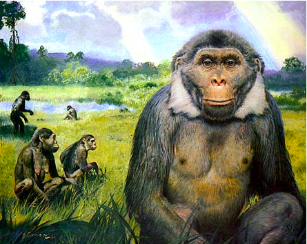

Wie reich ist Jeff Bezos?#
Mit 150 Mrd. USD ist Jeff Bezos auf Platz 4 der reichsten Menschen der Welt.
Datenvisualisierung#
1 Pixel Wealth: https://mkorostoff.github.io/1-pixel-wealth/

Datenvisualisierung von Mona Chalabi in 9 Ways to Imagine Jeff Bezos’ Wealth der New York Times, April 2022.
Wie lange muss man arbeiten um so reich wie Jeff Bezos zu werden?#
Das aktuelle monatliche Durchschnittseinkommen in Deutschland beträgt 4100 Euro brutto bei einer Vollzeitstelle.
Für eine Person in Steuerklasse I läuft das auf ca. 1588 Euro netto hinaus.
# 1. Schritt: USD in € umrechnen (Kurs: 1,03)
print(150000000000 * 0.93)
154500000000.0
# 1. Schritt: USD in € umrechnen (Kurs: 1,03)
vermoegen_in_usd = 200000000000
kurs = 0.93
vermoegen = vermoegen_in_usd * kurs
print(vermoegen)
186000000000.0
# 2. Schritt: Von Monatsgehalt auf durchschnittliches Jahreseinkommen
netto_pro_monat = 1588
einkommen = 12 * netto_pro_monat
print(einkommen)
19056
# 3. Schritt: Berechnung der Arbeitszeit in Jahren
jahre = vermoegen/ einkommen
print(jahre)
9760705.289672544
Die Welt vor 8 Millionen Jahren…#

Vor 8 Millionen Jahren gab es noch keine Menschen auf der Erde. Das Suptropische Klima in Europa kühlt langsam ab und damit sterben auch die meisten europäischen Arten der Menschenartigen aus. Einzig der Oreopithecus überlebt vorest auf einer Insel bei Sardinien/Korsika

In Südamerika existiert der größte Vogel, der jemals auf der Erde lebte. Der Argentavis magnificens ist wahrscheinlich mit dem Geier verwandt und hat eine Flügelspannweite von 7,20 Metern. Er ist doppelt so groß wie der größte heutige Vogel, der Andenkondor mit 3,30 Metern Flügelspannweite. Die Flügelfläche des Argentavis magnificens beträgt 7 Quadratmeter. Der Vogel wiegt 70-78 Kilogramm.
Wie lange muss man mit einem Spitzengehalt sparen?#
# Wie lange dauert es als Top-Manager so viel Geld anzuhäufen?
einkommen = 100000
jahre = vermoegen/ einkommen
print(jahre)
1545000.0
Die Welt vor 1,5 Millionen Jahren#

Im heutigen Kenia lebt der Homo erectus. Er benutzt Faustkeile und ist wahrscheinlich in der Lage Feuer zu machen.
Bis er Europa erreicht vergehen weitere 300.000 Jahre.
Was kann man mit so viel Geld machen?#
vermoegen = 154500000000
# Wie oft könnte er das Banksy's geschreddertes Bild mit Wert von ca. 18,89 Millionen Euro kaufen?
kosten_banksy = 18890000
anzahl = vermoegen / kosten_banksy
print(anzahl)
8178.930651138168
# Wie viele Boeing 737-700 zum Preis von 76 Millionen kann er kaufen?
kosten_boeing737 = 76000000
anzahl = vermoegen / kosten_boeing737
print(anzahl)
1973.6842105263158
Eine kleines Programm dafür…#
# Wie oft kann Jeff sich X kaufen
vermoegen = 154500000000
dinge = input('Dinge: ')
kosten = input('Kosten:')
anzahl = vermoegen / float(kosten)
antwort = f'Bezos kann sich {anzahl} {dinge} zum Preis von {kosten} € kaufen.'
print(antwort)
Bezos kann sich 1103571.4285714286 Tesla X zum Preis von 140000 € kaufen.